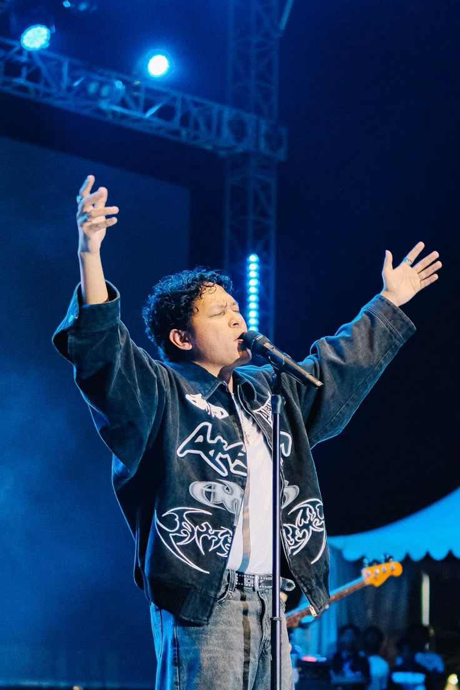

Tentang Hindia
Hindia adalah ruang bercerita bagi Baskara Putra: tempat kegelisahan sehari-hari menemukan nada dan pikiran yang riuh mendapat jeda. Di antara warna indie, alternative, dan pop Indonesia, lagu-lagunya terasa seperti percakapan selepas tengah malam, ketika kita akhirnya berani jujur tentang lelah, harapan, dan menjadi dewasa.
Untuk mereka yang sedang mencari arah, musik Hindia bisa menjadi teman duduk di perjalanan panjang. Ada cerita tentang rumah yang berubah, hubungan yang tumbuh, dan keberanian menerima diri sendiri. Di WPU StreamFest 2026, mari membawa cerita masing-masing dan menyanyikannya bersama di bawah cahaya malam.
Dalam Angka
Angka followers dan pendengar berikut merupakan data contoh dari brief.
- 2.5M Spotify Followers
- 1.8M Monthly Listeners
- 3 Rilisan Pilihan
Diskografi
Tiga bab, banyak cerita. Temukan yang paling dekat denganmu.
-
-

Lagipula Hidup Akan Berakhir
Listen Now -

Doves, '25 on Blank Canvas
Listen Now